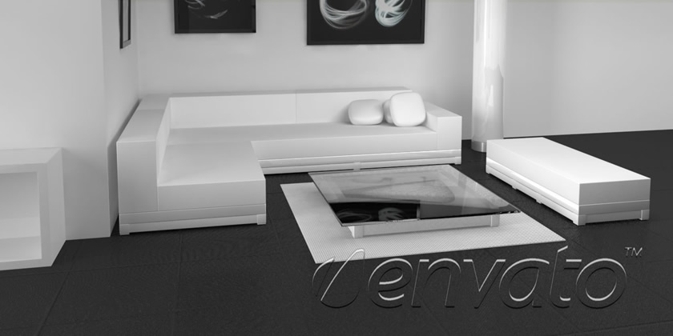
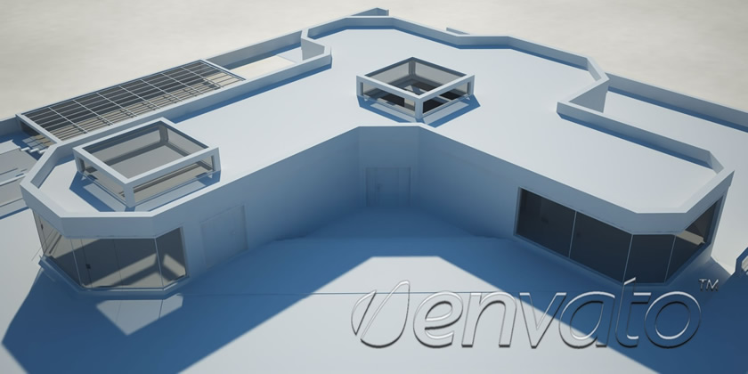
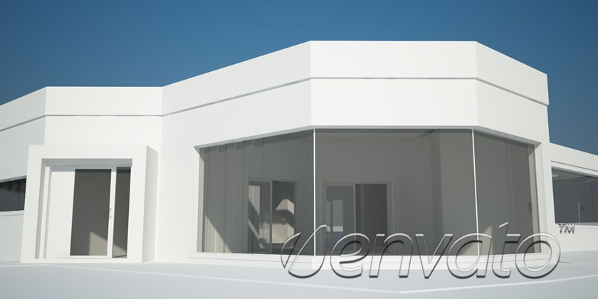
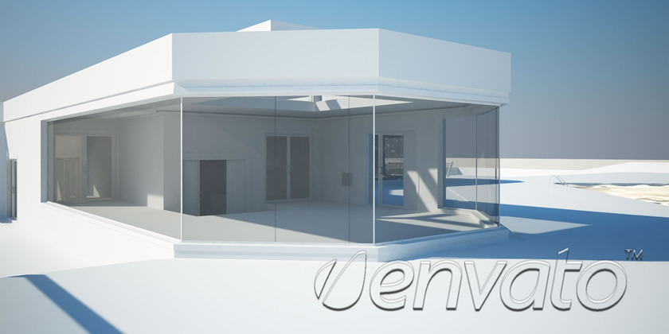

This is just a simple caption.
Custom size and position
You can set the caption's position to left, right, top or bottom, but you can also give it a custom position and size, as you can see in this example. Also, you can choose from 2 caption effects: slide and fade.
You can also add
HTML
elements like
links
or
Title
This is a list of items:
first item
second item
third item



Responsive
Responsive Proportional
Basic
Minimal
Video
Lightbox
Lazy Loading
Mixed
XML
Highlighted Features:
Individual slide settings.
Each slide can have its own transition effect, caption size/position, slideshow delay etc.
Thumbnail tooltips.
If you roll over the buttons/bullets, the thumbnail associated with the slide will slide in.